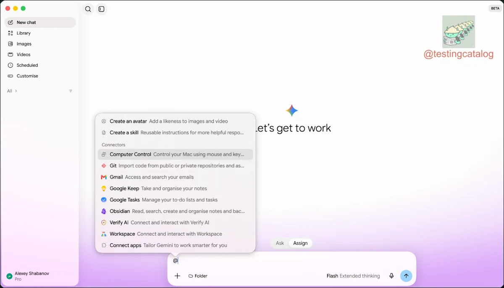

Threads｜Gemini 桌面版朝超級應用發展：Ask／Assign、Computer Use 與 Obsidian 整合封測

一句話摘要
這則 Threads 分享的重點，不是 Gemini 又多了一個聊天功能，而是 Google 可能把桌面版 Gemini 往「能理解本機檔案、操作桌面應用、連接個人知識庫並執行任務」的代理平台方向推進；不過目前多數新能力仍屬封閉測試或媒體根據測試版線索的整理。
來源脈絡
原始 Threads 分享由 garlia.t 發布，轉貼並評論 Yahoo 新聞／電腦王阿達的報導〈Google 打算將 Gemini 桌面版打造成超級應用，Computer Use 與 Obsidian 整合封測中〉。Threads 內容另有一段 AI Threads 的補充，將功能整理成四個方向：Ask／Assign、Computer Use、Obsidian Vault 整合，以及 Mac Finder 捷徑。
Yahoo 文章頁面可正常開啟，頁面標示電腦王阿達、2026-09-08 07:05；文中明確區分 Gemini Spark 已有的本機檔案／Workspace 任務能力，以及新一批仍在封閉測試的功能。
目前可整理的功能方向
### 1. Ask／Assign 雙模式
測試版介面可能提供 Ask 與 Assign 兩種模式：Ask 偏向對話與詢問，Assign 則偏向把工作交給代理執行。貼文提到 Assign 可鎖定工作資料夾，類似建立一個 Project Scope，讓代理在明確範圍內處理檔案任務。
這個方向與 Codex、Claude Desktop 等工具的「對話模式／工作模式」分化相似，但目前不應直接視為 Google 已正式發布的完整功能。
### 2. Computer Use
報導與貼文都把 Computer Use 視為關鍵方向：Gemini 不只回覆文字，而是可能直接操作桌面軟體與本機工作流程。這代表代理能力從 API 或檔案處理，延伸到視窗、按鈕、Finder 與跨應用程式操作。
導入時仍需要特別注意權限、誤操作、敏感檔案與人工確認機制；桌面操作能力越強，越不能只用「聊天機器人」的風險模型看待。
### 3. Obsidian Vault 整合
貼文將 Obsidian 視為本地個人知識管理核心，期待 Gemini 能直接讀取 Vault，針對筆記進行提問、分析或後續任務。對已有 Markdown 知識庫的人來說，這個方向的價值在於：筆記不必被鎖在單一聊天平台，而能成為桌面代理可操作的上下文來源。
實際使用時仍應區分「讀取」與「寫入」權限，並保留 Git 或其他備份；讓代理直接改寫 Vault 前，最好先限制資料夾範圍並要求產生變更摘要。
### 4. Finder 捷徑與跨電腦連線
Threads 補充提到 Mac Finder 右鍵將資料夾交辦給 Gemini，以及跨電腦連線的可能方向。這些設計若正式推出，會降低啟動代理任務的摩擦，讓「對這個資料夾做整理、摘要或轉換」變成作業系統層級操作。
但目前可確認的是媒體報導與測試版線索，不是所有使用者都能取得的正式功能清單。
對 AI 工作流的意義
這則分享值得收進 AI 學習雷達，因為它呈現了桌面代理的下一個競爭面向：
- 從單一對話視窗走向本機工作空間。
- 從回答問題走向接手可界定的檔案任務。
- 從雲端服務上下文走向本地 Markdown／Obsidian 知識庫。
- 從文字輸入走向 Finder 與桌面 UI 的入口整合。
對欒帥目前的本地 Markdown 知識庫工作流而言，最值得觀察的不是品牌競爭，而是「本地檔案、版本控制、權限範圍、代理執行與人工驗收」能否組成可控的個人作業系統。
導入檢核表
- [ ] 先確認功能是正式發布、限區域開放、Beta 還是封閉測試。
- [ ] 將代理限制在明確 Project Scope 或資料夾。
- [ ] Obsidian Vault 先以唯讀或副本測試。
- [ ] 對寫入、刪除、搬移與外部傳送設定人工確認。
- [ ] 重要 Markdown 以 Git 或其他方式保留版本與復原能力。
- [ ] 桌面 Computer Use 不要直接授予含個資、金鑰或財務資料的完整範圍。
- [ ] 每次任務要求代理回報讀取檔案、修改檔案與未完成事項。
查證狀態與限制
- Threads 分享連結已解析至 `@garlia.t` 的原始貼文。
- Yahoo 新聞／電腦王阿達文章可正常開啟，並確認文章標題、日期與功能整理。
- 本文把 Ask／Assign、Computer Use、Obsidian 與 Finder 整合定位為測試中或媒體轉述方向，不宣稱所有功能已普遍可用。
- Google 官方產品頁或正式公告未在本次來源中直接提供，因此正式上市時間、支援地區、方案限制與實際權限仍需等待官方文件確認。
原始連結
- Threads 分享：https://www.threads.com/share/BAZziYQkeK/
- Threads 原始貼文：https://www.threads.com/@garlia.t/post/DdBBSOik_Z-
- Yahoo／電腦王阿達報導：https://tw.news.yahoo.com/google-%E6%89%93%E7%AE%97%E5%B0%87-gemini-%E6%A1%8C%E9%9D%A2%E7%89%88%E6%89%93%E9%80%A0%E6%88%90%E8%B6%85%E7%B4%9A%E6%87%89%E7%94%A8-computer-230523183.html
- 電腦王阿達網站：https://www.kocpc.com.tw/